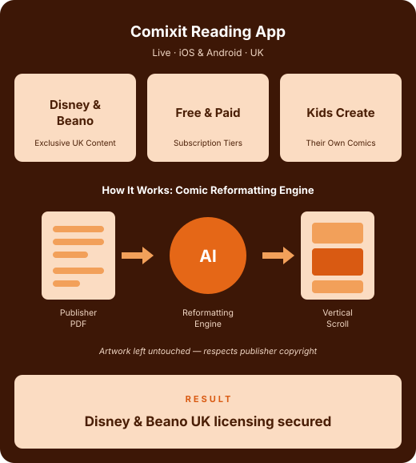
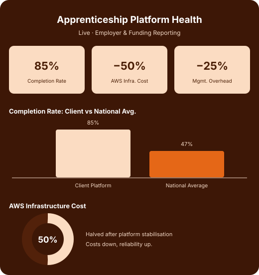
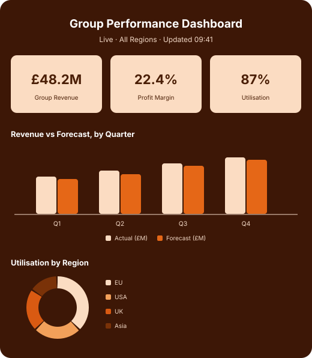

CASE STUDIES
-
CASE STUDY
Building Comixit
a Children's Reading App
Challenge
Comixit's founder, a scriptwriter and publisher from the film and book world, wanted to tackle a problem he kept seeing firsthand: children spending hours watching videos on their parents' phones instead of reading. It's a bigger issue than it sounds — a significant number of children in the UK leave primary school without the basic literacy skills they need for secondary education, and this was happening in the same year the government was actively promoting reading in schools. The founder had an initial idea and an early proof of concept for a children's comics app, but it needed real product thinking and engineering behind it to become something investors and major publishers would take seriously.
Solution
We built a fully functioning Android and iOS app with free and subscription tiers, giving parents the ability to monitor and control their children's access while letting kids read comics from major publishers including exclusive content from Disney and the Beano. Behind the app sits an extensive backend for onboarding new publishers and a system that lets children safely create and upload their own comics and characters. One of the harder technical problems was using AI to take a publisher's source files and turn them into a format that works on a phone screen, without the constant pinching and zooming that ruins the experience — an engine that reformats comics into a vertical scrolling, frame-by-frame layout, while leaving the original artwork untouched to respect publisher copyright. Our involvement went beyond code: we helped shape the business case and investor deck, provided fractional CTO support, and brought in product ownership and project management to keep a fast-moving, bootstrapped startup on track.
Effects
Once the app was live, Comixit secured exclusive UK licensing agreements with both Disney and the publisher of the Beano — deals that depended on having a working product to show. The app is still live and still growing today.
Stack: React Native, Expo, C#, ASP.NET, AWS, Terraform

-
CASE STUDY
Rescuing and Scaling
a Learning Management Platform
Challenge
The Client runs a platform that helps UK employers manage apprenticeships, including the reporting needed to claim government funding and the structure needed to get apprentices through to completion. That matters because national apprenticeship completion rates sit below 50%, while our Client's platform was already achieving close to 85%. The problem was how the platform had been built: it had grown over time through a single freelance developer who eventually became uncooperative and held the company's own IP to ransom. The system was live but needed significant manual intervention every month just to keep running, and our Client had no internal technical capability of its own to fall back on.
Solution
We brought in a fractional CTO with over 15 years' experience running learning platforms in the UK, who reviewed the existing codebase and AWS setup and identified where things needed to change. Working alongside an engineering manager and two dedicated engineers, the team made short-term fixes to stabilise the platform, then moved into iterative improvements to cut down the manual work involved in keeping it running month to month. What started as an emergency fix has since grown into a long-term development partnership, with ongoing refactoring, new features and additional products now on the roadmap.
Effects
- AWS infrastructure costs halved
- Management overhead for the business owner cut by around 25%
- Monthly manual intervention significantly reduced
- Client secured additional investment on the back of the improved platform
- Relationship has grown from an emergency fix into a long-term development partnership
Stack: .NET, AWS, React

-
CASE STUDY
Centralising Group Management Reporting
for Consulting & Professional Services
Challenge
This client group holds various consulting businesses, alongside several other propositions in professional services related operations under the same ownership. Despite operating as one group, they had no reliable, shared view of how the group as a whole was performing. Financial reporting, sales forecasting, resource utilisation, productivity and product delivery status all lived in separate, inconsistent formats across the different businesses. There was no single place anyone could look to see group revenue, profit, forecasts or history. Dashboards also only updated once a day, so leadership teams across multiple jurisdictions were often looking at figures that were already hours out of date compared to each other — and the reports themselves weren't giving leadership what they needed.
Solution
We designed and built a unified management dashboard that pulled financial reporting, forecasting, resource utilisation, productivity and product status into one group-wide view. The system had to work across multiple legal entities and jurisdictions, not just a single office, so it was built with that complexity in mind from the start. We worked closely with the Group CFO and in-country Finance Directors to understand what the existing reports were meant to achieve, checked the integrity of the underlying data, and rebuilt the reporting so every business unit internationally could see live figures rather than a single daily snapshot.
Effects
The group now has one source of truth for revenue, profit, forecasts, actuals and historical performance across all its businesses. Reporting is consistent across jurisdictions instead of varying office by office, and the dashboard was built to hold up against the layered regulatory and compliance requirements of running an international professional services group. Feedback from business leads has been consistently positive, and the engagement surfaced a bigger strategic opportunity — an active board-level conversation on enterprise and data architecture, with the relationship moving toward an ongoing advisory arrangement.
Stack: Microsoft
